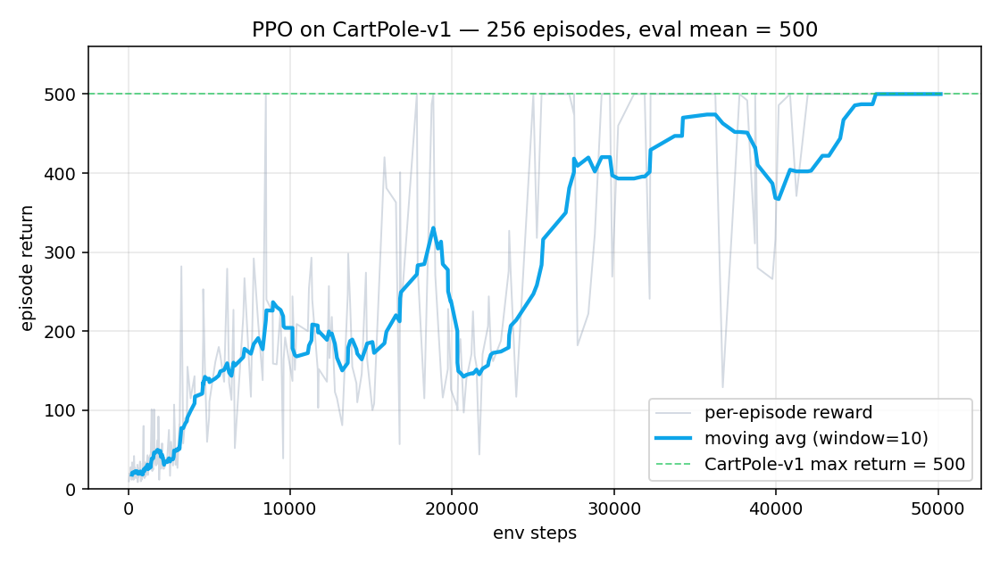

HW4 · DRL & Agentic AI Survey 2024 – 2026
Deep Reinforcement Learning · Foundation Models · Agentic AI · Embodied Robotics · AI for Science
一、概覽 — 為什麼這份 Survey 不只是文獻整理
2024–2026 之間，Deep Reinforcement Learning 經歷了三個根本性轉變：
- 從「獨立 sub-field」變成「foundation models 的對齊 / 推理元件」。 DeepSeek-R1（Nature 2025）是 首篇 peer-reviewed LLM Nature 論文，用純 RL on verifiable rewards 達 o1 等級推理能力。
- 從「flat policy」走向「dual-system + hierarchy」。 Helix / GR00T N1 / Gemini Robotics 1.5 / π0.5 共同收斂在「VLM 想（5–10 Hz）+ visuomotor 做（100–200 Hz）」的雙系統架構。
- 從「sim 訓、real 失敗」走向「differentiable physics + foundation video model」。 NVIDIA + Google + Disney 的 Newton physics engine、MuJoCo MJX、V-JEPA 2 重新定義 sim2real。
關鍵 2024–2026 里程碑
🔬 Science
AlphaProof + AlphaGeometry 2 → IMO 2024 銀牌（28/42）
DIII-D plasma tearing 避免（Nature 2024）
AI Scientist v2 → 首篇 AI 論文通過 ICLR 2025 workshop peer review
🤖 Robotics
Figure 03（Oct 2025，12k/yr 量產）
Apptronik Apollo（$5B 估值，Mercedes/GXO/Jabil 部署）
Berkeley G1 locomotion：RTX 4090 上 15 分鐘
🧠 Agents
MCP（97M 月下載，捐 Linux Foundation）
GPT-5 SWE-bench Verified 82.7%
DeepSeek-R1（Nature 2025，GRPO）
二、報告章節（7 + Bonus + Conclusion + References）
| 章節 | 主題 | 關鍵內容 |
|---|---|---|
| Part 1 | DRL 基礎 | MDP / Bellman / Policy Gradient；10 個演算法（DQN/Double DQN/PPO/A2C/A3C/SAC/TD3/MuZero/Decision Transformer/Offline RL/HRL） |
| Part 2 | Systems & Platforms | Isaac Lab / Habitat 3.0 / CARLA / Unity ML-Agents / RLlib / SB3 / FinRL / MineDojo / OpenVLA / AirSim |
| Part 3 | Agentic AI | OpenAI/Anthropic/Google agent 三大堆疊；RLHF→DPO→KTO→RLAIF→RLVR 對齊演化；ReAct/Toolformer/Gorilla；多 agent；memory 系統 |
| Part 4-A | Robotics & Embodied AI | VLA (OpenVLA/π0.5/Helix/GR00T N1/Gemini Robotics 1.5/Magma) + Diffusion Policy + Humanoids + Eureka/DrEureka/SERL |
| Part 4-B | Game AI | AlphaGo (2016) → MuZero (2020) → Voyager (2023) → SIMA 2 (2025) → AlphaProof (2025) |
| Part 4-C | AI for Science | AlphaFold 3、AlphaDev (LLVM)、AlphaTensor、AlphaProof、DIII-D plasma、GNoME+A-Lab、AI Scientist v2 |
| Part 5 | SOTA 趨勢 | 10 條 trends + 5 條主軸收斂（Foundation×RL / Embodied generalist / Sim2Real×diff. physics / World Model / Verifier-driven RL） |
| Part 6 | Comparative analysis | DQN / PPO / SAC / MuZero / Decision Transformer 五法比較表 + 任務情境選型 |
| Part 7 | GitHub 生態 | SB3 / RLlib / CleanRL / Spinning Up / Isaac Lab / CARLA / Habitat / FinRL / MineDojo / Unity ML-Agents + 10 個 2025-26 新興 repo |
| Part 8 | Bonus MVP | (B) PPO on CartPole 81 秒到滿分；(C) ReAct LLM agent (100 行) — 詳見下方 |
| Part 9 | Conclusion | 3 個轉折 + 5 個未來方向 + 倫理風險（reward hacking / 對齊偏差 / 機器人安全 / reproducibility / 社會衝擊） |
| Part 10 | References | 100+ 引用：Nature / Science / NeurIPS / ICML / ICLR / CoRL / RSS / CVPR / arXiv 2024-2026 |
三、2025–2026 SOTA 五條主軸
所有 trends 都可以收斂到下面五條互相交織的主軸：
1. Foundation Models × RL
RLHF / RLAIF / RLVR / GRPO; SIMA 2; AI Scientist v2
2. Embodied Generalist Agent
OpenVLA, π0.5, GR00T N1, Magma, Gemini Robotics 1.5
3. Sim2Real × Differentiable Physics
Newton (NVIDIA + Google + Disney), MJX, Isaac Lab 4.x, DrEureka
4. World Model × Imagined Planning
DreamerV3 (Nature 2025), Genie 3, V-JEPA 2
5. Verifier-Driven RL
DeepSeek-R1, AlphaProof, AlphaGeometry 2, AlphaDev下一波 breakthrough 可能來自五條軸的交叉點 — 例如 world-model RL on humanoid、verifier-driven scientific agent。
四、Bonus MVP — 兩個 Hands-On Demos
Bonus B — PPO on CartPole-v1 (Stable-Baselines3 v2.8.0)
用 50,000 env steps、4 個並行 env、PPO 預設 hyperparameter 訓 CartPole-v1。

Bonus C — Tool-Using ReAct LLM Agent (~100 行)
實作 Part 3 提到的 ReAct loop：Thought → Action → Observation → ... → FinalAnswer。兩個工具：calculator(expression)（AST-based safe eval）+ wiki_search(query)（內建 DRL 迷你語料）。無 ANTHROPIC_API_KEY 也跑得起來（offline deterministic planner）。
Q1: Multi-hop reasoning（wiki + calculator）
[USER] What is sqrt(144) plus the year AlphaGo played Lee Sedol?
[AGENT] Thought: I need AlphaGo's debut year. I'll check the wiki.
Action: wiki_search(AlphaGo)
[TOOL] -> AlphaGo is a computer Go program developed by DeepMind.
Its match versus Lee Sedol took place in March 2016. ...
[AGENT] Thought: Good — AlphaGo's Lee-Sedol match was in 2016.
Now compute sqrt(144) + 2016.
Action: calculator(sqrt(144) + 2016)
[TOOL] -> 2028.0
[AGENT] FinalAnswer: sqrt(144) = 12 and AlphaGo's Lee-Sedol match
was in 2016, so the answer is 2028.0.Q2: Wiki lookup（單 hop）
[USER] Tell me about DeepSeek-R1.
[AGENT] Thought: Let me look up DeepSeek-R1.
Action: wiki_search(DeepSeek-R1)
[TOOL] -> DeepSeek-R1, published in Nature in 2025, is an open-weights
reasoning model trained with pure RL from verifiable rewards
using a method called GRPO. ...
[AGENT] FinalAnswer: DeepSeek-R1 is an open-weights reasoning model
trained with pure RL from verifiable rewards using GRPO.
It is the first peer-reviewed LLM in Nature (2025).Q3: Pure arithmetic
[USER] Compute 2 ** 10 - 24
[AGENT] Thought: Pure arithmetic — use calculator.
Action: calculator(2 ** 10 - 24)
[TOOL] -> 1000
[AGENT] FinalAnswer: 1000這個 ~100 行 demo = ReAct (Yao et al., ICLR 2023) → Toolformer → Gorilla → Claude Code 的最小可運行版本。重點在架構而非規模。
五、檔案與重現
| 檔案 | 內容 |
|---|---|
| report/HW4_DRL_Survey.html | 完整 11,575 字報告（HTML 自含 CSS；瀏覽器 Print → PDF 即可） |
| report/HW4_DRL_Survey.md | 同上的 Markdown 原始檔 |
| slides/slides.md | 10–15 分鐘簡報（15 張投影片，Marp-compatible） |
| code/ppo_demo.py | Bonus B：PPO on CartPole |
| code/llm_agent_demo.py | Bonus C：ReAct LLM agent |
| code/requirements.txt | Bonus dependency |
| README.md | 中文導覽（GitHub 入口） |
| reference/research_notes_consolidated.md | 文獻搜集筆記（3 個研究 agent 的整合輸出） |
快速重現
# 1. 裝依賴
pip install -r code/requirements.txt
# 2. 跑 PPO（CPU ~90 秒，生成 reward 曲線）
python code/ppo_demo.py
# 3. 跑 LLM agent（無 API key 也能跑）
python code/llm_agent_demo.py
# 4. 重生 HTML
python report/build_html.py